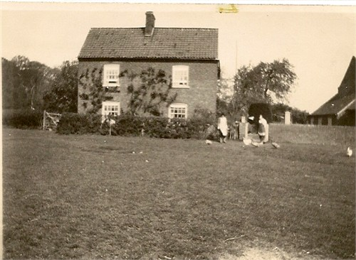
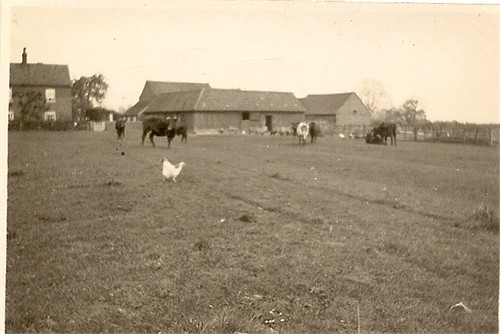
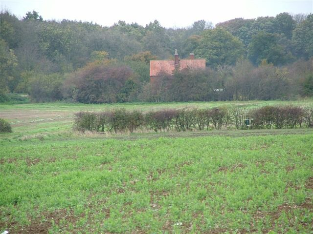
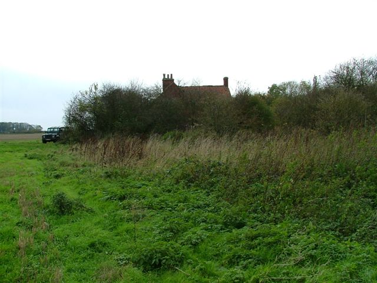
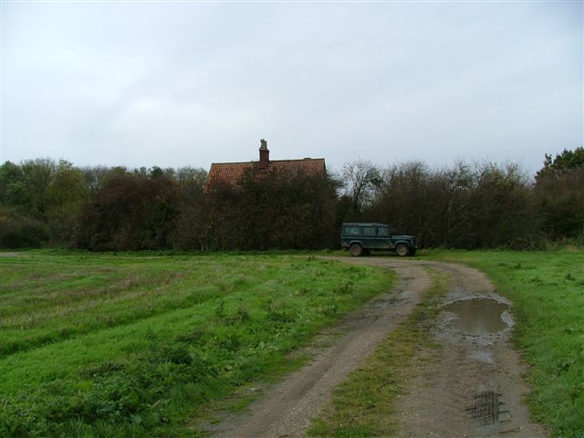

Housham Wood Farm, also known as Gamekeepers Cottage, was home to our Wood ancestors for over 200 years. The hamlet of Housham is located near the village of Thorpe on the Hill, just south of Lincoln.
Extract from 'The Hamlet of Howsham' Chapter 21 of 'Haddington Gleanings' 1994.
In addition to Housham Grange , two other Housham farmsteads were also established in the Seventeenth century, evidently sited together beside Housham Wood and first attested in 1664 when Anne Johnson died in one of them, the other being the home of John Johnson recorded in the Hearth Tax of 1665. Little is known of John other than his burial at South Hykeham in January 1706, and we hear no more of his cottage subsequent to the marriage of Mary Johnson of Housham at Bracebridge in 1721. Both of these cottages however were likely to have been built subsequent to private enclosure of fields in 1611.

The home of Anne Johnson, widow, as described on March 1st 1664 seems to have been a small low cottage with just three rooms, "the house", "the Parlour" and "the Dairy" (LAO LCC Administrations 1664/76). There was also a yard with two chickens and some wood, presumably at the back. The parlour was clearly her bedroom containing "Two beds and bedding and a Chest" whereas the 'house' by contrast sounds like the living room with "A Cupboard, two little tables 2 chayres" and "hempen and hardenyarn" there. The dairy with "A Dishbench and milke vessel" was effectively her kitchen. All in all her assets totaled some £22, nearly half of which took the form of her six cows `"in the farr Close". She was succeeded in the cottage by her son Joseph who died in 1684 and it seems to have been taken then by James Johnson until his own death in 1690. Robert Pacey, who described himself as a "ffarmer" (LAO LCC 1701/171) took the cottage and his wife Sarah died there in 1700. Sarah was in fact his second wife since in his Will, made the following year, he asked to be buried beside his former wife in the churchyard at Thorpe. As it happens this request was ignored for he was buried at Swinderby in 1701. He was succeeded by his elder son John Pacey "yeoman" (LAO LCC Wills 1714/112) who died there in 1714 leaving his property to his widow Anne, their children being minors.


By contrast to the Pacey's, the Wood family was long associated with Housham, John Wood, and his first wife Mary succeeding the widow Anne Pacey in 1715, and indeed all seven of their children were baptised there. Mary Wood died in September 1738 and John married again to Hannah Rawson at Lincoln St Swithens in January 1743, although in the event this union proved childless. John himself served as Haddington churchwarden at South Hykeham on no fewer than seven occasions, the first being 1715-16. He died in 1762 and interestingly was succeeded by his youngest son Richard an interesting survival of manorial copyhold practise.
Richard Wood, who was baptised in March 1730, married Anne Pacey at Auborn in July 1761 and secured a settlement certificate to Swinderby for himself and his new wife the same year. Tragedy struck however and Anne died in May 1762, no doubt the key reason influencing Richard to stay at Howsham. He subsequently remarried and had four children by his second wife Mary in the period 1764-1770. Since the last three of these children was not allowed baptism in 1770 it can only be assumed that Richard and his wife had by then become committed Baptists. Like his father he served several spells as churchwarden, three of these being subsequent to his adoption of Baptism. He died in June 1786 and was buried at South Hykeham.
Richard was succeeded by his eldest son John Wood, who like his father and grandfather was to marry twice. Baptised in December 1767 he first married Elizabeth Andrew at South Hykeham in April 1792. Theirs was a fruitful union with four daughters and two sons baptised in the period up to 1800, John clearly not having adopted the Baptist persuasions of his parents, and was clearly the last of his family to serve as churchwarden at South Hykeham. Elizabeth died in 1806 and John remarried to Susannah Hague at Swinderby the following year, a marriage blessed by twin sons in August 1808. Susannah died in 1830 leaving John the widower he appears in the 1841 Census. He died himself in March 1849.

William Wood, one of the twins, then took the farm. He married his wife Sarah in February 1829 and was the object of deep consternation in 1870 when his 23 year old daughter Emma Wood gave birth to an illegitimate child by Henry Spick, a farm labourer of Farndon in Nottinghamshire, although Spick subsequently agreed to pay the child maintenance of two shillings a week. William who was farming 80 acres in 1851, had however sufficient status to serve as Chairman of the Haddington Parish Vestry in 1857 and 1864, and it was in his time that the present cottage was built in 1855 (a date stone on the current house states that it was built in 1855). . He was buried in 1889.


His son Richard Wood, baptised in 1851, was the next member of the Wood family to reside at Housham in what was by then called 'the Gamekeepers Cottage'. Richard indeed chaired the Parish Meeting which refused Parish Council Status for Haddington in 1895 and at least one Parish meeting was also held at his cottage, this being that for 1897. However he took part in Parish politics subsequent to the First World War, although Mrs Glossop recalls him still there as a smallholder in the years before 1934. He died in about 1938 and his widow moved to Eagle. Richard Wood had a successor, Valentine Wood, who was born about 1883, and he was the last Wood to farm Housham until his death in the 1950's.

His widow Edie then moved to live with her sister at Moreton, Swinderby, thus ending a long association between the Wood family and Housham. Valentine and Edie had a daughter, whose name was Henrietta. Mr Colyer, the gamekeeper for the Nevile Estate, then moved into the cottage.

Today Howsham is approached by a well used tractor track from the A46 normally barred by a padlocked metal gate, whilst a sign "C Nevile and Son, Housham, Dryer" lurks in the undergrowth nearby. The nearer farm, Housham Grange , still possesses a row of older barns and open sheds, although these have been joined by a large barn and grain hopper, a large galvanised shed and a concrete loading bay with ramp. The sandy texture of the soil is also very striking, particularly either side of the trackway leading to the former Gamekeepers cottage, and there are several small stands of woodland hinting at the former clearance which occurred. As to the 'Gamekeepers Cottage' itself, it now lurks derelict and empty, its doors and windows boarded up, largely hidden behind overgrown trees and hedges, awaiting either demolition or some timely conservation scheme.